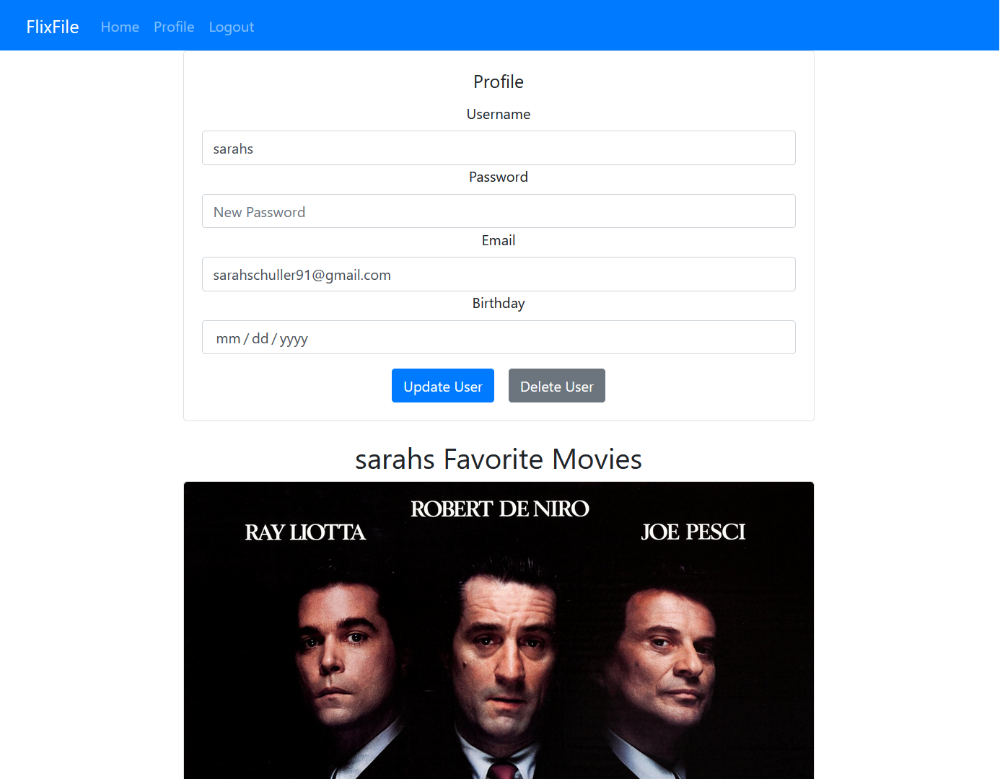
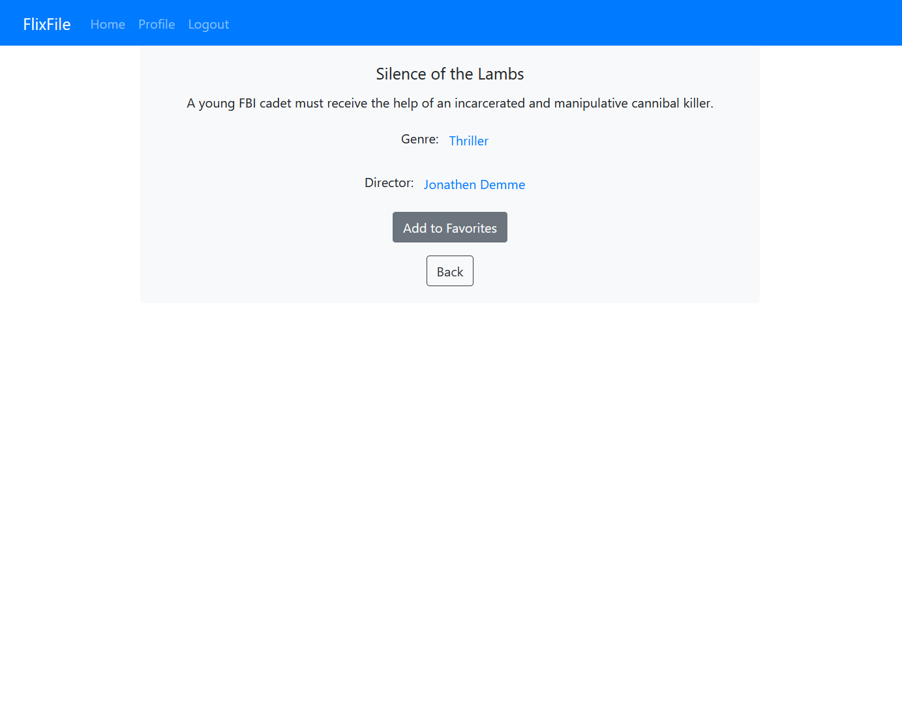

myFlix is a web application that was created using the MongoDB, Express, React, Node.js tech stack, or MERN. This application provides users with information about a variety of movies, along with details about the movie director and genre. Users can register, sign-in, update their personal information and add movies to their favorites list.
This was my first real step into full stack development, and was a challenging and fulfulling project to finally complete. I am proud to be able to display this complete application as a piece of my growing portfolio.
This project was part of my Full Stack Development course at Career Foundry. The purpose of the project is to demonstrate my understanding of the MERN tech stack and provide me with further experience working in Javascript development.
For the user, the purpose of the myFlix app is to provide details about a variety of movies, and allow them the ability to save movies to a list of favorites so that they can easily be viewed again later.
The goal of this project was to have a fully functional full-stack project to include with my portfolio. I needed to learn how to build the server-side and client-side of the application from scratch to deliver a finished product. The application ultimately must function as expected for the user and be able to provide the information requested.
The server-side of this project was built using Node.JS, Express and MongoDB. I created an API that can be called using HTTP methods (GET, POST, PUT, DELETE). These methods allow the user to GET information, DELETE their profiles or favorite movies, POST new profiles or add favorite movies, and PUT (edit) existing profile information. The endpoints created were tested using Postman to ensure they function correctly. Information provided by the API is delivered in JSON format.
The client-side of this project was built using React, React-Redux and React Bootstrap. The app is comprised of a single page that can switch between multiple views (the user profile, login and registration forms, single movie details, Director details, etc.). The user can select movies and view additional information, including details about the Director and expanded information about the genre.
This was a satisfying project to complete but was not without its challenges. Learning React and understanding how to properly route the application were my biggest hurdles but were overcome with the help and knowledge of my tutor and mentor. I also worked on creating my first API with the use of Node.js and MongoDB, which required a lot of trial and error as I worked through the process of setting the application up. In the future, I would like to explore other backend languages to further refine my understanding of this aspect of web development.
I worked on this application over the course of two months during my Full Stack Web Development course at Career Foundry. This particular project accounted for the largest portion of my coursework as it involved learning multiple new technologies to bring the entire app together.